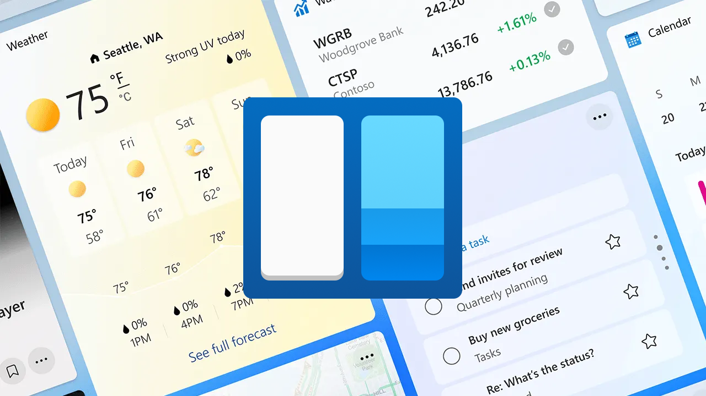

Windows 11 Widgets
Windows 11
Windows 11 Widgets are just one feature of Windows 11, the latest operating system from Microsoft, launched in October 2021 and brought a fresh, modern design with new features to enhance productivity, creativity and connectivity. Windows 11 features a centred Start Menu with a more intuitive and accessible user experience which is echoed throughout Windows 11 with a sleek and streamlined interface including modern icons and a cleaner layout making it easier to navigate.
Windows 11 features Snap Layouts and Snap Groups to organise application windows more efficiently and with the new Desktops feature you can create separate virtual desktops for different tasks such as work or gaming. Windows 11 also includes security enhancements to safeguard user data and ensure a secure computing environment and is supported on a wide range of hardware and devices with regular updates, fixes and security patches. Windows 11 is also continuously innovating with new features such as Copilot that allows you to achieve anything with your own AI companion on any Windows 11 Device or enjoy enhanced AI experiences with Copilot+PCs.
Windows 11 Widgets
Windows 11 Widgets are designed to provide you with quick access to information or tasks making it easier to stay updated or get things done without interrupting your workflow. Widgets display information dynamically directly on your Windows 11 desktop and can include Weather updates, news headlines, traffic reports and more all from the Widgets Board that can be accessed by selecting the Widgets icon on the taskbar or by using the Win + W keyboard shortcut. Widgets can be tailored to show relevant information and can customise many Widgets to suit your needs with some integrating with services such as Microsoft 365 and OneDrive to show recent documents, meetings, photos and more. Widgets can also be interactive to be able to get more information and they can be added, removed or rearranged as needed in the Widgets Board of Windows 11.
Designing Windows 11 Widgets using Adaptive Cards
Windows 11 Widgets are designed using Adaptive Cards, which are platform-agnostic snippets of UI designed using JSON to exchange content in a common and consistent manner that can be used to create the templates for visually appealing and interactive widgets that can display text or images and perform actions. The Adaptive Card Designer is an online tool that allows the design and preview of Adaptive Cards in real time for a variety of host apps including Windows 11 Widgets which also can show Light and Dark themes along with small, medium and large sizes. There are also Templates to start with such as Agenda, Flight Details, Input form and more along with Samples including Inputs with Validation, Order confirmation, Weather and more. You can drag and drop Elements onto the Designer to create the Card Structure for the Template of a Windows 11 Widget using Adaptive Cards, change any Element Properties, use the Sample Data Editor to change any data as Adaptive Card support Data Binding or use the Card Payload editor to edit the JSON directly referring to the Adaptive Card Schema.
The Adaptive Card Schema supports Card Elements including TextBlock, Image and Media with MediaSource and Caption source for videos. Card Elements also include text elements such as RichTextBlock and TextRun, Containers such as Container, ColumnSet with Column and FactSet with Fact for displaying key / value pairs along with Image Set for images and Table with TableCell for displaying tabular information. Containers also support ActionSet for Actions that can be performed by a Windows 11 Widget using Adaptive Cards which includes OpenUrl, Submit, ShowCard, ToggleVisiblity with TargetElement and Execute. Execute can send information from any Inputs in a Windows 11 Widget including Text, Number, Date, Time, Toggle and Choice with ChoiceSet for groups of checkboxes or radio buttons and Data Query for dynamic choices. Adaptive Cards also support Types such as BackgroundImage and Refresh along with Authentication, TokenExchangeResource and AuthCardButton used for starting and handling any authentication plus there is Metadata for an Adaptive Card including webUrl for browser fallback that is used on some hosts of Adaptive Cards.
Adaptive Cards can be created using the Designer to either create a New Card from scratch or use one of the examples. There are also samples to help get inspiration from or to learn from and documentation about authoring Adaptive Cards that not only can be used for Windows 11 Widgets but can be used in Microsoft Outlook with Outlook Actionable Messages enabling actions to be taken directly without leaving the inbox such as approving requests or filling out forms or in Microsoft Viva with Viva Connections to create engaging dashboards and personalised content for employees. There are also SDKs for rendering Adaptive Cards on other platforms including JavaScript, Windows Presentation Foundation, WinUI with Windows App SDK and even Android and iOS. Adaptive Card Documentation, Designer, Samples, Schema and more can be found at adaptivecards.io to help create the perfect Windows 11 Widget.
Developing Windows 11 Widgets using Windows App SDK
Windows 11 Widgets are developed using Windows App SDK to create a Widget Provider in a Progressive Web Application for PWA-driven widgets, C++ with WinRT or a Win32 app using C# to implement a Widget Provider that will response to requests from the Widgets Board and return the JSON Template for the Widget using an Adaptive Card along with the JSON Data to be bound to the widget. Widget Providers need to implement the IWIdgetProvider interface that has six key methods used to communicate with the Widgets Board which are CreateWidget when the widget has been added, Delete Widget when the widget has been removed from the widget board, OnActionInvoked when an Action for a widget has been invoked, OnWidgetContextChanged when the size of the widget has been changed, Activate when the Widgets Board is interested in updates from a Widget Provider and Deactivate when the Widgets Board is no longer interested in updates from a Widget Provider.
Windows App SDK applications that implement a Widget Provider need to register the Windows 11 Widget, so it is available in the Widgets Board and include information in the Package.appxmanifest to indicate the details for the widget including the Class Id or GUID, display name, description and sizes such as small, medium or large. Screenshots can be provided for a Widget to be shown when adding a Widget in the Widgets Board which can support light mode and dark mode options including being able to use language-specific or language-neutral assets plus an icon to be used in the list of available widgets to be added to the Widgets Board.
Windows App SDK applications that need to implement Windows 11 Widgets can be developed more easily by using the Comentsys.Toolkit.WindowsAppSdk package on NuGet which makes it easier to create the Widget Provider with a WidgetProviderBase that can be inherited with a lightweight class that provides the ClassId or GUID and a WidgetBase class to provide the JSON Template using Adaptive Cards and JSON Data for the Windows 11 Widget. This package integrates all the necessary classes created by Microsoft for the main functionality for creating a Widget Provider and Widget so developers can focus on designing and creating the Widget itself before registering it in the application and modifying the Package.appxmanifest. There is full-source code for the package on GitHub which also includes a sample Counting Widget to make it even easier to get started developing Windows 11 Widgets. There is also full documentation from Microsoft at aka.ms/widgetdevdocs on how to develop Windows 11 Widgets.
Podcast
RoguePlanetoid Podcast also covers Windows 11 Widgets, which are a convenient and glanceable way to keep you informed and productive without interrupting your workflow. You can listen where ever you listen to your podcasts about designing and developing Windows 11 Widgets.